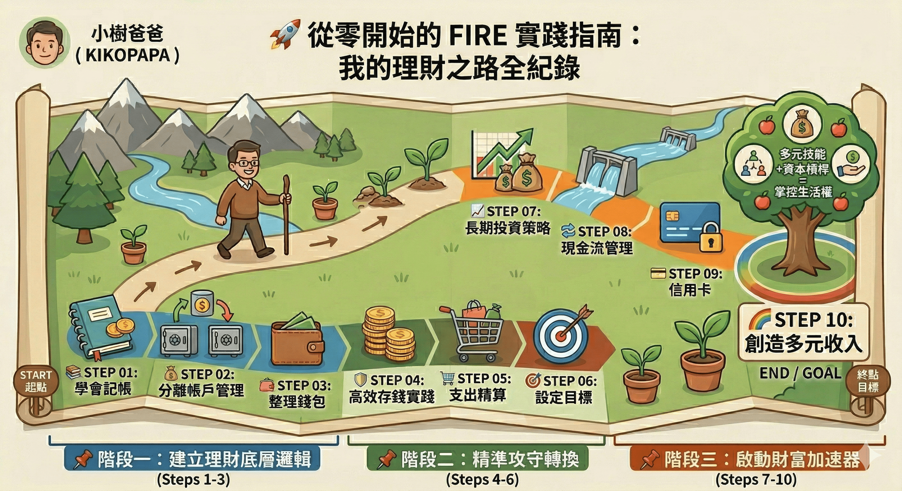

從零開始的 FIRE 實踐指南 🚀
這不是理論，而是一位工程師兼圍棋老師的四年實戰紀錄。我將理財拆解為 10 個具體步驟，陪伴你一步步奪回人生的主導權。
📌 階段一：建立理財底層邏輯
理財的第一步不是投資，而是「覺察」。透過整理身邊的小物，建立與金錢的正確關係。
📌 階段二：精準攻守轉換
有了基礎後，我們需要透過精確的支出控管，提煉出未來的「投資資本」。
📌 階段三：啟動財富加速器
最終目標是建立「黃金三角」收入流，讓資產與能力為你持續產生價值。
這不是理論，而是一位工程師兼圍棋老師的四年實戰紀錄。我將理財拆解為 10 個具體步驟，陪伴你一步步奪回人生的主導權。

理財的第一步不是投資，而是「覺察」。透過整理身邊的小物，建立與金錢的正確關係。
有了基礎後，我們需要透過精確的支出控管，提煉出未來的「投資資本」。
最終目標是建立「黃金三角」收入流，讓資產與能力為你持續產生價值。